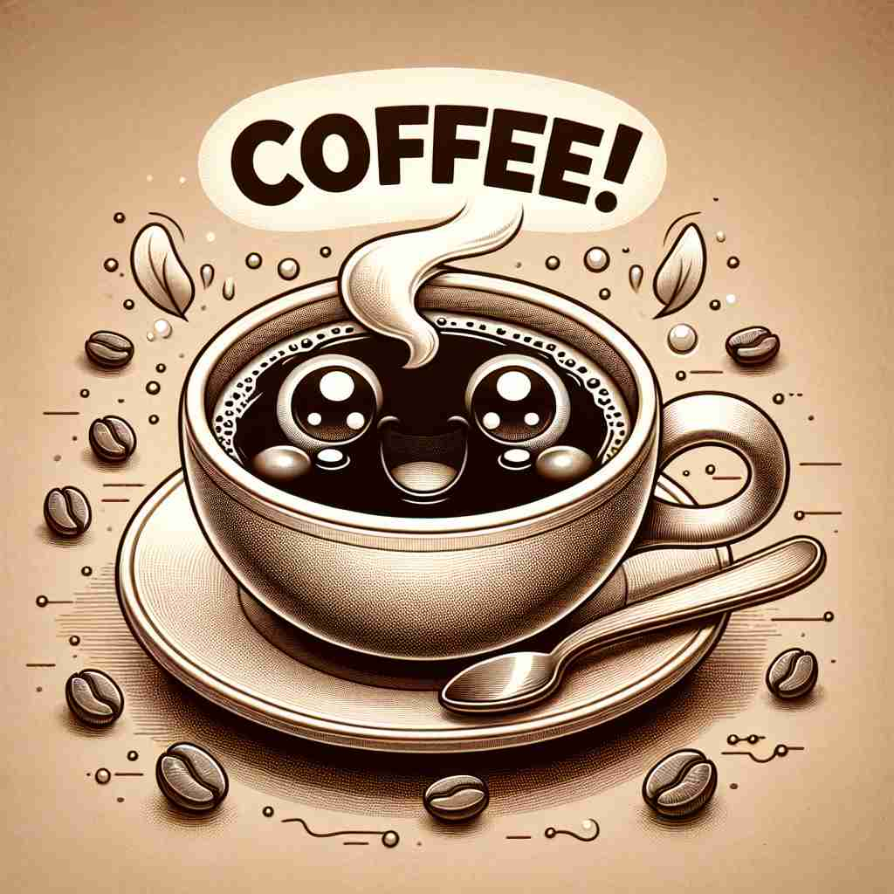

💬 I like to drink coffee in the morning. 我喜欢在早上喝咖啡。

💬 I love to enjoy a cup of coffee in the morning. 我喜欢在早晨享用一杯咖啡。
💬 I like to drink coffee in the morning. 我喜欢在早上喝咖啡。
💬 I love to enjoy a cup of coffee in the morning. 我喜欢在早晨享用一杯咖啡。
🧠 想象一杯热腾腾的咖啡，这是'coffee'的核心含义。从这杯饮料出发，我们可以联想到制作它的豆子、它的颜色、围绕它进行的社交活动，以及提供它的行为。通过这个中心意象，你可以轻松记住并理解'coffee'的各种用法。
🔈 ['kɒfɪ]
🗝️ n. a hot drink made from the roasted and ground seeds of a tropical shrub 一种由热带灌木的烘焙和研磨种子制成的热饮
🎭 清晨的厨房里，阳光透过窗帘洒在桌上。一杯散发着浓郁香气的热咖啡被轻轻端放在桌面上，袅袅的蒸汽在空气中游走。这个场景完美地展示了咖啡作为一种热饮的温暖和香气。
💬 Would you like a cup of coffee? 您想要一杯咖啡吗？
🌳 该词源自希腊词 'koffia'，经过阿拉伯语 'qahwa' 和土耳其语 'kahve' 演变而来，指一种饮品，没有明显的前缀或后缀。
💡 可以通过联想咖啡的香味和早晨提神的作用来记住 'coffee'，因为它是一种常用的饮料。
🗝️ n. the roasted and ground seeds of the coffee plant used to make coffee 用来制作咖啡的咖啡植株烘焙和研磨过的种子。
🎭 在一个咖啡烘焙坊里，空气中弥漫着烘焙咖啡豆的浓香。一位技艺精湛的烘焙师正在仔细观察烘焙过程，确保每颗豆子都达到恰到好处的深度。这展现了咖啡豆作为制作咖啡的基础原料。
💬 I need to buy some coffee beans. 我需要买一些咖啡豆。
🤔 从饮料延伸到制作饮料的原料
🗝️ n. a light brown colour 浅棕色
🎭 在时尚展厅中，一位设计师正用浅棕色（咖啡色）的布料进行剪裁，为新一季的时装做准备。布料在灯光下反射出温暖而柔和的色调。这是咖啡作为一种颜色的表现。
💬 She painted her walls a warm coffee colour. 她把墙壁刷成了温暖的咖啡色。
🤔 基于咖啡饮料的典型颜色
🗝️ n. a social gathering at which coffee is consumed 一个饮用咖啡的社交聚会
🎭 在一个温馨的咖啡馆里，朋友们围坐在一起，伴随着轻松的爵士音乐，享受着咖啡的美味。一边啜饮咖啡，一边分享彼此的生活点滴，形成了一场友好的社交聚会。这是咖啡作为社交活动的魅力所在。
💬 Let's meet for coffee next week. 下周我们一起喝咖啡吧。
🤔 从饮用咖啡的行为延伸到相关的社交活动
🗝️ v. to serve or provide coffee 提供咖啡
🎭 在一个忙碌的办公室里，助理正为开会的同事们准备咖啡。他快速地将咖啡倒入杯中，微笑着递给每位需要的人，为繁忙的工作日带来一点提神的时刻。这一刻展示了提供咖啡的过程和意义。
💬 The restaurant coffees and teas 200 people every morning. 餐厅每天早晨为200人提供咖啡和茶。
🤔 从名词转化为动词，表示提供咖啡的行为